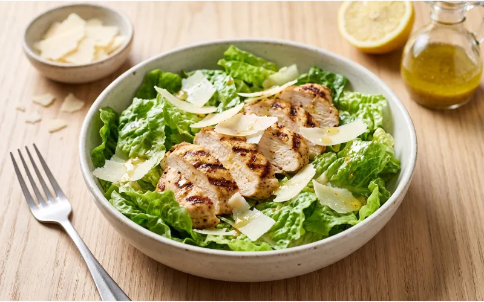
Ensalada César Fit
Pollo a la parrilla con aderezo ligero de limón y Dijon
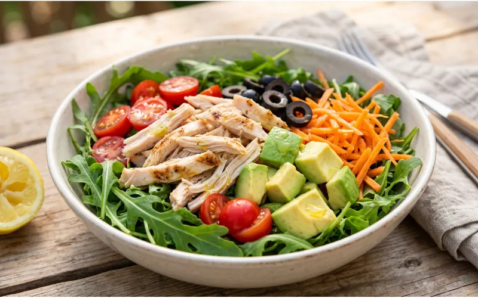
Bowl de Pollo, Rúcula y Aguacate
Proteína magra, grasas saludables y base fresca de rúcula
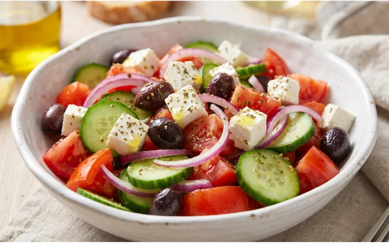
Ensalada Griega con Queso Feta
Clásico mediterráneo con queso feta, aceitunas y orégano
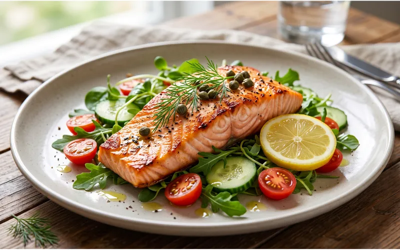
Ensalada de Salmón a la Parrilla
Rica en omega 3 con alcaparras, limón amarillo y eneldo
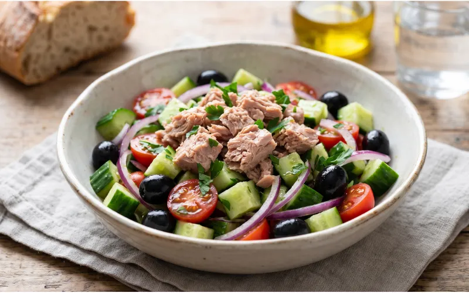
Ensalada de Atún con Pepino
Refrescante, ligera sin papa y lista en minutos
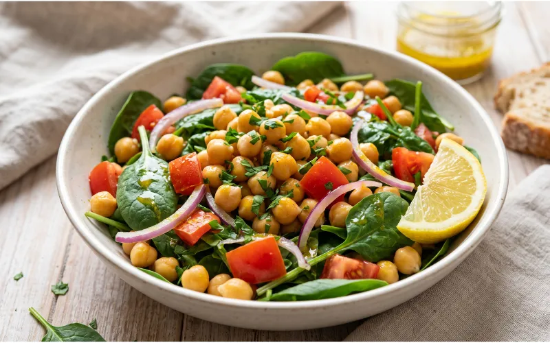
Ensalada de Garbanzo y Espinaca con Cúrcuma
Fibra vegetal, espinaca baby y aderezo dorado de cúrcuma
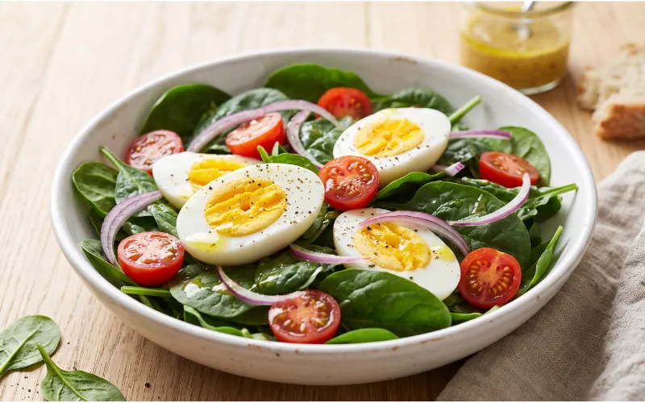
Ensalada de Huevos con Espinaca
Rica en proteína con vinagreta suave de mostaza Dijon
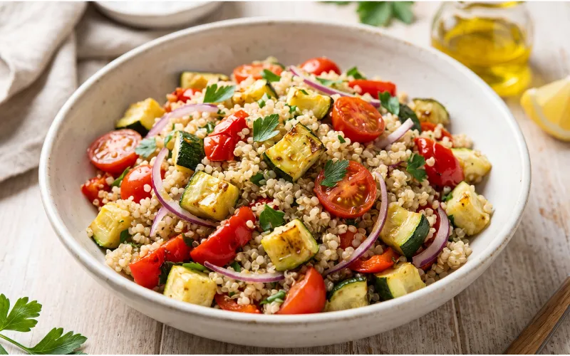
Ensalada de Quinoa con Verduras
Quinoa graneada con calabacita y pimiento rojo asados
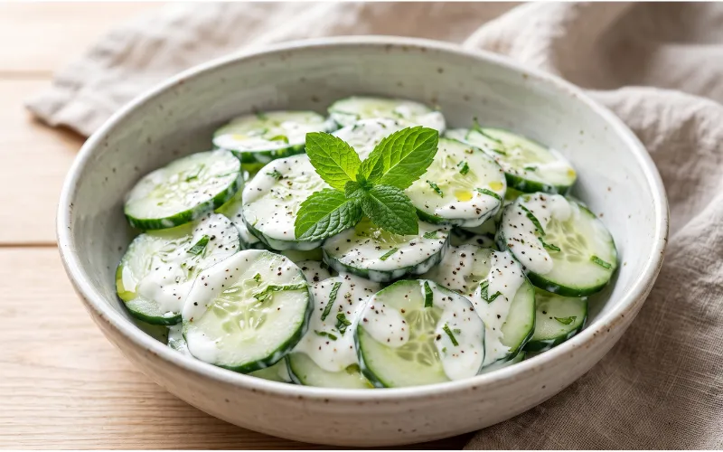
Ensalada de Pepino con Yogur y Menta
Cremosa, fría y ultra refrescante con ajo y menta
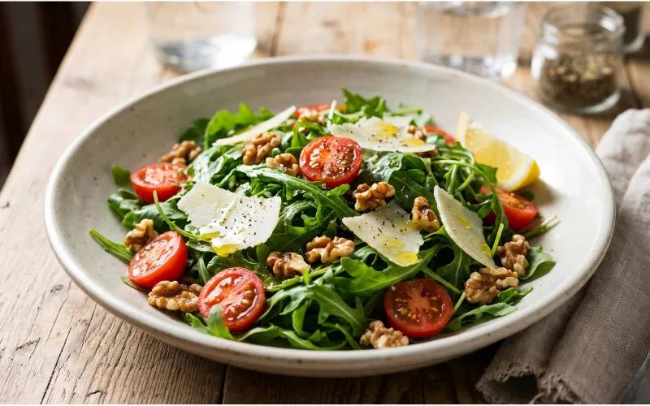
Ensalada de Rúcula con Nueces y Parmesano
Estilo bistró con nueces tostadas y lajas de parmesano
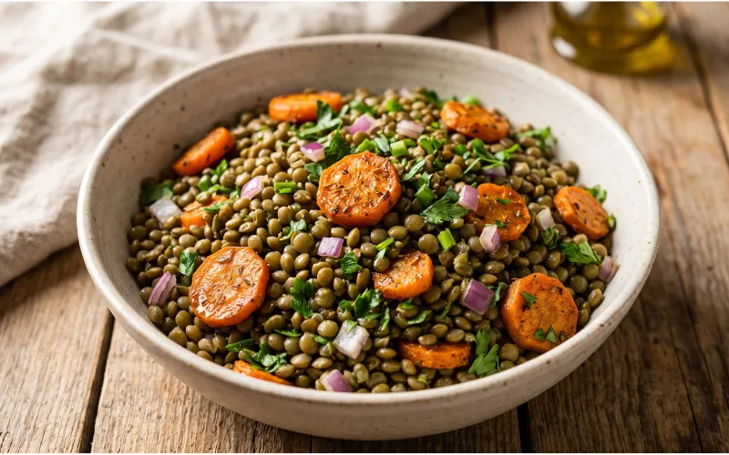
Ensalada de Lenteja con Zanahoria Asada
Lentejas al dente con zanahorias horneadas al comino